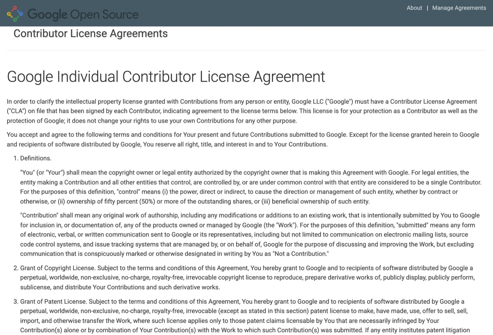

목차
사전 준비
Chromium은 GitHub가 아니라 Google 계정과 Gerrit으로 기여합니다. 아래를 행사 전에 끝내 오면 당일 한 시간 안에 CL을 올릴 수 있습니다. 집에서 30~60분, 다운로드는 약 1GB입니다. 현장에서 처음부터 하면 셋업에만 30분 넘게 걸립니다.
1. 계정 준비 (10분)#
- Google 계정 — Gmail 등 Google 계정 하나. 이 계정의 이메일이 커밋 기록에 남습니다. 회사 계정은 회사 CLA 문제가 생길 수 있어 개인 계정을 권합니다.
- CLA 서명 — Google 개인 CLA에 1번 계정으로 로그인해 개인 기여자 라이선스 동의서(Individual CLA)에 서명합니다. 5분 걸립니다. 서명이 없으면 리뷰어가 승인할 수 없습니다.
- Gerrit 로그인 — Chromium Gerrit에 1번 계정으로 한 번 로그인하고, 오른쪽 위 Settings에서 Full Name을 영문 실명으로 맞춥니다. Chromium은 기여자 명단(
AUTHORS)에 실명을 씁니다.

2. Git 설치와 설정#
- macOS:
xcode-select --install또는 Homebrew - Windows: Git for Windows
- Linux: 배포판의 패키지 관리자
git --version이 나오면 됩니다. 그다음 터미널에서 아래를 실행합니다. Windows는 cmd.exe에서 합니다.
git config --global user.name "Gildong Hong" # 영문 실명, Gerrit Full Name과 같게
git config --global user.email gildong@gmail.com # 1번 계정 이메일
git config --global core.autocrlf false
git config --global core.filemode false3. depot_tools 설치#
depot_tools는 Chromium 개발 도구 모음이고, Gerrit 업로드 명령 git cl이 여기 들어 있습니다. 첫 실행 때 Python 등을 내려받아 폴더가 500~800MB가 됩니다.
macOS#
cd ~
git clone https://chromium.googlesource.com/chromium/tools/depot_tools.git
echo 'export PATH="$PATH:$HOME/depot_tools"' >> ~/.zshrc
source ~/.zshrc
gclient # 첫 실행에 도구를 내려받습니다. 5~10분Linux#
cd ~
git clone https://chromium.googlesource.com/chromium/tools/depot_tools.git
echo 'export PATH="$HOME/depot_tools:$PATH"' >> ~/.bashrc # ~ 대신 $HOME
source ~/.bashrc
gclientWindows#
공식 안내는 Windows 빌드 안내의 depot_tools 절입니다.
C:\src폴더를 만들고 그 안에서git clone https://chromium.googlesource.com/chromium/tools/depot_tools.git을 실행합니다. 경로에 공백이 있으면 안 됩니다.- 환경 변수 Path의 맨 앞에
C:\src\depot_tools를 넣습니다. 다른 Python·git보다 앞이어야 합니다. - 환경 변수
DEPOT_TOOLS_WIN_TOOLCHAIN을0으로 추가합니다. - cmd.exe를 새로 열고
gclient를 실행합니다. PowerShell이 아닙니다. 첫 실행에 git·python을 설치합니다. where python3에서C:\src\depot_tools\python3.bat가 먼저 나오는지 봅니다. 아니면 설정 › 앱 실행 별칭에서 python.exe·python3.exe를 끕니다.- WSL을 쓰면 WSL 안에 depot_tools를 따로 둡니다. Windows 쪽과 같은 폴더를 함께 쓰면 안 됩니다.
4. Gerrit 인증 연결#
모든 OS에서, depot_tools를 설치한 뒤 한 번 실행합니다.
git config --global depot-tools.useNewAuthStack 1
update_depot_tools
git cl creds-check --global
git credential-luci login # 브라우저가 열리면 1번 Google 계정으로 로그인5. 준비 확인#
세 줄이 모두 되면 끝입니다.
git cl help # depot_tools 명령 목록이 나옵니다
git credential-luci info # 1번 계정 이메일이 보입니다
git ls-remote https://chromium.googlesource.com/chromiumos/manifest.git HEAD # 비밀번호를 묻지 않고 한 줄이 나옵니다6. 소스 미리 받기 (권장)#
1분, 252MB입니다. 행사장 네트워크를 아끼고 당일 바로 시작할 수 있습니다. 명령의 뜻은 첫 CL 올리기 1단계에 있습니다.
cd ~ # Windows: cd C:\src
git clone --depth=1 --filter=blob:none --sparse https://chromium.googlesource.com/chromium/src
cd src
git sparse-checkout set docs infra build/ios build/util tools/android/infobar_deprecation tools/checkperms tools/metrics tools/python tools/resources tools/web_dev_style하지 말 것과 준비물#
fetch chromium이나gclient sync는 실행하지 마세요. 전체 소스 수십 GB를 몇 시간 동안 받습니다.- 회사 노트북은 프록시나 보안 소프트웨어가 googlesource.com 접속을 막을 수 있습니다. 개인 노트북을 권합니다.
- 노트북과 충전기를 가져오고, 1번 Google 계정에 로그인된 브라우저를 준비해 주세요.
- 막히면 당일 14:40 조 편성 직후 멘토에게 말해 주세요. 셋업 도움은 15:00 전에 끝내는 것이 목표입니다.